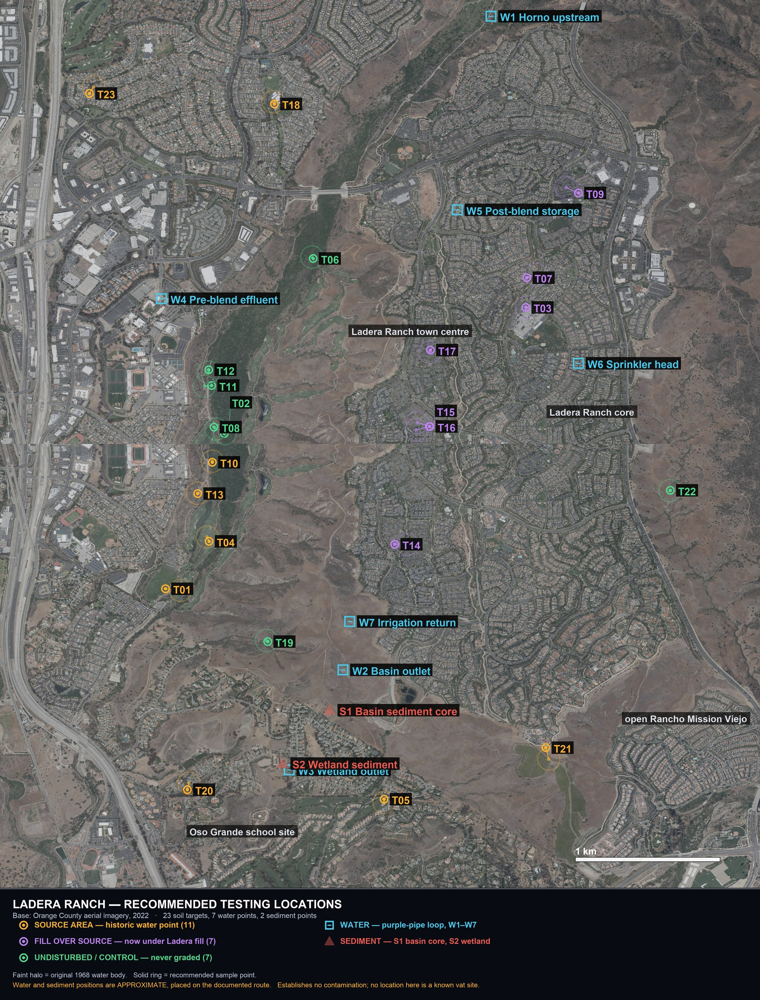

Every recommended sampling location in one document: 23 soil points at historic water bodies, 7 water points through the recycled-irrigation loop, 2 sediment points, and the control and background samples that make any of it interpretable. With the analytical method for each, and what a positive and a negative result would each mean.
The objective is not to prove contamination. It is to design the smallest set of measurements that can determine whether any exists, and if so how it is distributed.
Three things follow from that, and they shape every row below.
Sample points are given to five decimal places because a field crew needs them. This document is an operational one and is not for publication. The project's staged coordinate-disclosure practice applies: do not post these locations publicly, and if a CHRIS records search later returns archaeological locational data, that material is confidential under Government Code § 6254.10 and must not be published at all.
Access is the first practical filter. Several points sit on the Arroyo Trabuco golf course, in HOA common areas, or on Rancho Mission Viejo land. Permission comes before sampling, and the landowner for each should be identified before a crew is booked.

Ladera_Testing_Map.jpg on the Desktop.Each one is a surface-water body recorded on this land by the 1968 survey. A dipping vat needed several thousand gallons on a fortnightly cycle, so vats were built where water was. None of these is a known vat location. They are the places the siting logic points to.
| Original water point | 33.53792, -117.66258 |
| Recommended sample point | 33.53803, -117.66370 offset 105 m from the water point · 24 m from the nearest road |
| What is there now | Arroyo Trabuco GC fairway/rough; 1990 open oak-grass with ranch road |
| Why this location | stock-water point on the drainage (1 m) - congregation and deposition in one spot |
| Drainage relationship | Trabuco Creek (22 m) · water point sits 1 m from the mapped drainage |
| Grading status | Historic water point now golf course. Accessible, shallow disturbance only. |
| Sample to take | 0–6 in surface; 6–18 in where access allows |
| Question it answers | Is there elevated arsenic at this historic water point? |
| Original water point | 33.54763, -117.65929 |
| Recommended sample point | 33.54765, -117.65933 offset 4 m from the water point · 262 m from the nearest road |
| What is there now | Arroyo Trabuco creek corridor, never graded |
| Why this location | stock-water point on the drainage (15 m) - congregation and deposition in one spot |
| Drainage relationship | Trabuco Creek (74 m) · water point sits 15 m from the mapped drainage |
| Grading status | Never graded. Original soil profile most likely intact here. |
| Sample to take | 0–6 in surface, plus 6–18 in |
| Question it answers | What does never-graded ground here read? This is the yardstick every other result is judged against. |
| Original water point | 33.55546, -117.63687 |
| Recommended sample point | 33.55546, -117.63691 offset 4 m from the water point · 5 m from the nearest road |
| What is there now | Under Ladera housing at Sienna Pkwy; 1990 ranch drainage head |
| Why this location | stock-water point on the drainage (18 m) - congregation and deposition in one spot now 217 m from Ladera Ranch ES - present-day access relevance orchard confounder 3.4 km away - arsenic here could not be casually attributed to orchards |
| Drainage relationship | Sienna Botanica (20 m) · water point sits 18 m from the mapped drainage |
| Grading status | Historic water point now under Ladera development and placed fill. |
| Sample to take | 0–6 in surface and a fill-depth interval (target the placed-fill horizon) |
| Question it answers | Did anything at this water point survive into the fill, and is it at the surface where people are? |
| Original water point | 33.54123, -117.66061 |
| Recommended sample point | 33.54096, -117.66046 offset 33 m from the water point · 210 m from the nearest road |
| What is there now | Golf course fairway on the old canyon floor |
| Why this location | stock-water point on the drainage (27 m) - congregation and deposition in one spot large impoundment (12,395 m2) - a settling basin for fine sediment |
| Drainage relationship | Trabuco Creek (47 m) · water point sits 27 m from the mapped drainage |
| Grading status | Historic water point now golf course. Accessible, shallow disturbance only. |
| Sample to take | 0–6 in surface; 6–18 in where access allows |
| Question it answers | Is there elevated arsenic at this historic water point? |
| Original water point | 33.52477, -117.64745 |
| Recommended sample point | 33.52499, -117.64745 offset 24 m from the water point · 13 m from the nearest road |
| What is there now | Houses present in 1990 (Mission Viejo, Horno Creek Rd) |
| Why this location | stock-water point on the drainage (27 m) - congregation and deposition in one spot now 205 m from Stoneridge Park - present-day access relevance |
| Drainage relationship | Horno Creek (38 m) · water point sits 27 m from the mapped drainage |
| Grading status | Historic water point developed before 1990, outside the Ladera mass grading. |
| Sample to take | 0–6 in surface; 6–18 in where access allows |
| Question it answers | Is there elevated arsenic at this historic water point? |
| Original water point | 33.55857, -117.65281 |
| Recommended sample point | 33.55848, -117.65272 offset 13 m from the water point · 335 m from the nearest road |
| What is there now | Oak/riparian corridor below the 2026 concrete find |
| Why this location | stock-water point on the drainage (42 m) - congregation and deposition in one spot large impoundment (9,111 m2) - a settling basin for fine sediment orchard confounder 2.0 km away - arsenic here could not be casually attributed to orchards |
| Drainage relationship | Trabuco Creek (150 m) · water point sits 42 m from the mapped drainage |
| Grading status | Never graded. Original soil profile most likely intact here. |
| Sample to take | 0–6 in surface, plus 6–18 in |
| Question it answers | What does never-graded ground here read? This is the yardstick every other result is judged against. |
| Original water point | 33.55750, -117.63615 |
| Recommended sample point | 33.55730, -117.63684 offset 68 m from the water point · 7 m from the nearest road |
| What is there now | Under Ladera housing; Frog Park 20 m |
| Why this location | stock-water point on the drainage (42 m) - congregation and deposition in one spot now 47 m from Frog Park - present-day access relevance orchard confounder 3.5 km away - arsenic here could not be casually attributed to orchards |
| Drainage relationship | Sienna Botanica (23 m) · water point sits 42 m from the mapped drainage |
| Grading status | Historic water point now under Ladera development and placed fill. |
| Sample to take | 0–6 in surface and a fill-depth interval (target the placed-fill horizon) |
| Question it answers | Did anything at this water point survive into the fill, and is it at the surface where people are? |
| Original water point | 33.54793, -117.65992 |
| Recommended sample point | 33.54804, -117.66009 offset 20 m from the water point · 192 m from the nearest road |
| What is there now | Arroyo Trabuco slope/corridor |
| Why this location | stock-water point on the drainage (46 m) - congregation and deposition in one spot large impoundment (4,661 m2) - a settling basin for fine sediment |
| Drainage relationship | Trabuco Creek (116 m) · water point sits 46 m from the mapped drainage |
| Grading status | Never graded. Original soil profile most likely intact here. |
| Sample to take | 0–6 in surface, plus 6–18 in |
| Question it answers | What does never-graded ground here read? This is the yardstick every other result is judged against. |
| Original water point | 33.56288, -117.63391 |
| Recommended sample point | 33.56254, -117.63300 offset 92 m from the water point · 7 m from the nearest road |
| What is there now | Under condos off Granville St; Chaparral Park 71 m |
| Why this location | stock-water point on the drainage (88 m) - congregation and deposition in one spot now 142 m from Chaparral ES - present-day access relevance orchard confounder 3.8 km away - arsenic here could not be casually attributed to orchards |
| Drainage relationship | Sienna Botanica (113 m) · water point sits 88 m from the mapped drainage |
| Grading status | Historic water point now under Ladera development and placed fill. |
| Sample to take | 0–6 in surface and a fill-depth interval (target the placed-fill horizon) |
| Question it answers | Did anything at this water point survive into the fill, and is it at the surface where people are? |
| Original water point | 33.54593, -117.66021 |
| Recommended sample point | 33.54586, -117.66021 offset 8 m from the water point · 214 m from the nearest road |
| What is there now | Golf margin + preserved brush at canyon confluence |
| Why this location | stock-water point on the drainage (97 m) - congregation and deposition in one spot now 396 m from Coronado Park - present-day access relevance |
| Drainage relationship | Trabuco Creek (138 m) · water point sits 97 m from the mapped drainage |
| Grading status | Historic water point at golf course margin. |
| Sample to take | 0–6 in surface; 6–18 in where access allows |
| Question it answers | Is there elevated arsenic at this historic water point? |
| Original water point | 33.55057, -117.66081 |
| Recommended sample point | 33.55061, -117.66027 offset 50 m from the water point · 197 m from the nearest road |
| What is there now | Slope above Arroyo Trabuco Trail |
| Why this location | mapped 1968 stock-water point - daily cattle congregation, dung and hoof traffic |
| Drainage relationship | Trabuco Creek (154 m) · water point sits 165 m from the mapped drainage |
| Grading status | Never graded. Original soil profile most likely intact here. |
| Sample to take | 0–6 in surface, plus 6–18 in |
| Question it answers | What does never-graded ground here read? This is the yardstick every other result is judged against. |
| Original water point | 33.55143, -117.66048 |
| Recommended sample point | 33.55159, -117.66048 offset 18 m from the water point · 140 m from the nearest road |
| What is there now | Slope above Arroyo Trabuco Trail |
| Why this location | mapped 1968 stock-water point - daily cattle congregation, dung and hoof traffic |
| Drainage relationship | Trabuco Creek (125 m) · water point sits 167 m from the mapped drainage |
| Grading status | Never graded. Original soil profile most likely intact here. |
| Sample to take | 0–6 in surface, plus 6–18 in |
| Question it answers | What does never-graded ground here read? This is the yardstick every other result is judged against. |
| Original water point | 33.54394, -117.66132 |
| Recommended sample point | 33.54392, -117.66130 offset 3 m from the water point · 215 m from the nearest road |
| What is there now | Large 1990 impoundment now golf course + creek |
| Why this location | mapped 1968 stock-water point - daily cattle congregation, dung and hoof traffic large impoundment (24,745 m2) - a settling basin for fine sediment now 319 m from Coronado Park - present-day access relevance |
| Drainage relationship | Trabuco Creek (206 m) · water point sits 183 m from the mapped drainage |
| Grading status | Historic water point now golf course. Accessible, shallow disturbance only. |
| Sample to take | 0–6 in surface; 6–18 in where access allows |
| Question it answers | Is there elevated arsenic at this historic water point? |
| Original water point | 33.54078, -117.64571 |
| Recommended sample point | 33.54078, -117.64666 offset 88 m from the water point · 8 m from the nearest road |
| What is there now | Under Ladera housing, Davis Pl |
| Why this location | mapped 1968 stock-water point - daily cattle congregation, dung and hoof traffic orchard confounder 1.9 km away - arsenic here could not be casually attributed to orchards |
| Drainage relationship | Sienna Botanica (468 m) · water point sits 473 m from the mapped drainage |
| Grading status | Historic water point now under Ladera development and placed fill. |
| Sample to take | 0–6 in surface and a fill-depth interval (target the placed-fill horizon) |
| Question it answers | Did anything at this water point survive into the fill, and is it at the surface where people are? |
| Original water point | 33.54788, -117.64507 |
| Recommended sample point | 33.54808, -117.64410 offset 93 m from the water point · 8 m from the nearest road |
| What is there now | Under Ladera housing, O'Neill Dr; park 77 m |
| Why this location | mapped 1968 stock-water point - daily cattle congregation, dung and hoof traffic orchard confounder 2.5 km away - arsenic here could not be casually attributed to orchards |
| Drainage relationship | Sienna Botanica (467 m) · water point sits 509 m from the mapped drainage |
| Grading status | Historic water point now under Ladera development and placed fill. |
| Sample to take | 0–6 in surface and a fill-depth interval (target the placed-fill horizon) |
| Question it answers | Did anything at this water point survive into the fill, and is it at the surface where people are? |
| Original water point | 33.54833, -117.64498 |
| Recommended sample point | 33.54808, -117.64405 offset 90 m from the water point · 6 m from the nearest road |
| What is there now | Under Ladera housing, Bayley St roundabout; park 53 m |
| Why this location | mapped 1968 stock-water point - daily cattle congregation, dung and hoof traffic orchard confounder 2.5 km away - arsenic here could not be casually attributed to orchards |
| Drainage relationship | Sienna Botanica (486 m) · water point sits 526 m from the mapped drainage |
| Grading status | Historic water point now under Ladera development and placed fill. |
| Sample to take | 0–6 in surface and a fill-depth interval (target the placed-fill horizon) |
| Question it answers | Did anything at this water point survive into the fill, and is it at the surface where people are? |
| Original water point | 33.55267, -117.64407 |
| Recommended sample point | 33.55281, -117.64401 offset 17 m from the water point · 7 m from the nearest road |
| What is there now | Under Ladera housing, Creighton Pl |
| Why this location | mapped 1968 stock-water point - daily cattle congregation, dung and hoof traffic orchard confounder 2.8 km away - arsenic here could not be casually attributed to orchards |
| Drainage relationship | Sienna Botanica (500 m) · water point sits 528 m from the mapped drainage |
| Grading status | Historic water point now under Ladera development and placed fill. |
| Sample to take | 0–6 in surface and a fill-depth interval (target the placed-fill horizon) |
| Question it answers | Did anything at this water point survive into the fill, and is it at the surface where people are? |
| Original water point | 33.56819, -117.65569 |
| Recommended sample point | 33.56806, -117.65560 offset 16 m from the water point · 14 m from the nearest road |
| What is there now | Developed before 1990 (Mission Viejo); Cordova Park 3 m |
| Why this location | mapped 1968 stock-water point - daily cattle congregation, dung and hoof traffic now 41 m from Cordova Park - present-day access relevance orchard confounder 2.3 km away - arsenic here could not be casually attributed to orchards |
| Drainage relationship | Trabuco Creek (593 m) · water point sits 632 m from the mapped drainage |
| Grading status | Historic water point developed before 1990, outside the Ladera mass grading. |
| Sample to take | 0–6 in surface; 6–18 in where access allows |
| Question it answers | Is there elevated arsenic at this historic water point? |
| Original water point | 33.53482, -117.65619 |
| Recommended sample point | 33.53475, -117.65610 offset 11 m from the water point · 319 m from the nearest road |
| What is there now | Ungraded canyon south of Ladera |
| Why this location | mapped 1968 stock-water point - daily cattle congregation, dung and hoof traffic |
| Drainage relationship | Trabuco Creek (677 m) · water point sits 681 m from the mapped drainage |
| Grading status | Never graded. Original soil profile most likely intact here. |
| Sample to take | 0–6 in surface, plus 6–18 in |
| Question it answers | What does never-graded ground here read? This is the yardstick every other result is judged against. |
| Original water point | 33.52599, -117.66196 |
| Recommended sample point | 33.52558, -117.66207 offset 47 m from the water point · 20 m from the nearest road |
| What is there now | Oak grove + pre-1990 houses |
| Why this location | mapped 1968 stock-water point - daily cattle congregation, dung and hoof traffic |
| Drainage relationship | Trabuco Creek (679 m) · water point sits 688 m from the mapped drainage |
| Grading status | Historic water point at the margin of pre-1990 development. |
| Sample to take | 0–6 in surface; 6–18 in where access allows |
| Question it answers | Is there elevated arsenic at this historic water point? |
| Original water point | 33.52748, -117.63520 |
| Recommended sample point | 33.52818, -117.63542 offset 81 m from the water point · 7 m from the nearest road |
| What is there now | Rancho Mission Viejo new-village edge; 1990 ranch pond + oaks |
| Why this location | mapped 1968 stock-water point - daily cattle congregation, dung and hoof traffic |
| Drainage relationship | None (1037 m) · water point sits 1094 m from the mapped drainage |
| Grading status | Historic water point on newer Rancho Mission Viejo development. |
| Sample to take | 0–6 in surface; 6–18 in where access allows |
| Question it answers | Is there elevated arsenic at this historic water point? |
| Original water point | 33.54410, -117.62619 |
| Recommended sample point | 33.54412, -117.62617 offset 3 m from the water point · 202 m from the nearest road |
| What is there now | Open rangeland on RMV land, ungraded |
| Why this location | mapped 1968 stock-water point - daily cattle congregation, dung and hoof traffic orchard confounder 2.8 km away - arsenic here could not be casually attributed to orchards |
| Drainage relationship | Sienna Botanica (1175 m) · water point sits 1144 m from the mapped drainage |
| Grading status | Open Rancho Mission Viejo ground; likely never graded. |
| Sample to take | 0–6 in surface, plus 6–18 in |
| Question it answers | What does never-graded ground here read? This is the yardstick every other result is judged against. |
| Original water point | 33.56911, -117.66905 |
| Recommended sample point | 33.56871, -117.66935 offset 52 m from the water point · 25 m from the nearest road |
| What is there now | Developed before 1990; Granada Park 12 m |
| Why this location | mapped 1968 stock-water point - daily cattle congregation, dung and hoof traffic now 26 m from Granada Park - present-day access relevance orchard confounder 1.7 km away - arsenic here could not be casually attributed to orchards |
| Drainage relationship | Oso Creek (319 m) · water point sits 1714 m from the mapped drainage |
| Grading status | Historic water point developed before 1990, outside the Ladera mass grading. |
| Sample to take | 0–6 in surface; 6–18 in where access allows |
| Question it answers | Is there elevated arsenic at this historic water point? |
These are not optional extras. They are the measurement. Six of the twenty-three points above are already classified as undisturbed and can serve as controls; the rest of this section adds what those do not cover.
| Group | n | Where | What it establishes |
|---|---|---|---|
| UNDISTURBED | 3–6 | The six targets classed as never-graded — Arroyo Trabuco creek corridor and open Rancho Mission Viejo ground. Matched for soil series and slope aspect where possible. | What never-farmed, never-cut ground here reads. Every source-area result is judged against this. |
| BACKGROUND | 3 | Same geology, off the ranch entirely. Monterey Formation soils outside any historic ranching or agricultural footprint. | What "normal" is for this formation, independent of any land-use history on this property. |
| NEVER-IRRIGATED | 3–4 | Landscape soil matched for soil and aspect that is not on the recycled-water system. Paired one-for-one with the long-irrigated samples below. | The comparison that tests the deposition question in the purple-pipe loop. |
| LONG-IRRIGATED | 3–4 | Common-area turf and slope that has been on purple-pipe irrigation for roughly two decades. | Whether two decades of irrigation has left anything persistent in the soil. |
| DRAINAGE-PATH | 3–4 | Downslope of the highest-ranked source areas, along the documented historical drainage lines. | Whether anything moved from a source area, and how far. |
A control is only a control if it is comparable. For each pair, match on: soil series (from the USDA soil survey), slope and aspect, depth interval, and season of collection. Record all four on the chain-of-custody form. A control taken on a different soil series in a different season is not a control.
Ladera's dry-weather runoff is captured at the bottom of its watershed, passed through a county basin and seven acres of HOA wetlands, blended with recycled water and sprayed back onto the community as landscape irrigation. About 180 acre-feet a season. This network is designed to tell the sources apart.
A single sample at a sprinkler head tells you what is being applied, but not where it came from. If something is found, the next question is immediately whether it entered with the runoff, arrived in the recycled water, or was concentrated by the treatment. Points W1 through W5 exist so that a result at W6 can be attributed. If you can only fund one, fund W6 — but know what it cannot tell you.
| ID | Location | Sample | Why here | What a result means |
|---|---|---|---|---|
| W1 | UPSTREAM Horno Creek above the basin | Grab dry weather | What the watershed delivers before any treatment. The baseline for everything downstream. | + the catchment is the source. − rules the catchment out and moves attention to the recycled stream. |
| W2 | BASIN OUT Horno Water Quality Basin outlet | Grab | Isolates what settling alone removes. County of Orange owns and operates the basin. | The difference from W1 quantifies basin removal. Little difference means settling is not the mechanism. |
| W3 | WETLAND OUT After the 7 acres of constructed wetlands | Grab | The full effect of the entire engineered treatment train for this stream. There is nothing else between here and the blend. | Establishes what the seven acres actually do. The single most informative water point in the network. |
| W4 | PRE-BLEND Recycled effluent before blending | Grab | The other input, on its own. Provision K.2 of the permit already contemplates sampling at exactly this point. | Separates plant-origin from runoff-origin constituents. Without it the blend is uninterpretable. |
| W5 | POST-BLEND Distribution storage | Grab | What actually enters the purple-pipe network after the two streams meet. | Mass-balance check against W3 and W4. A value outside that range means something else is entering. |
| W6 | SPRINKLER Purple-pipe head, 2–3 community locations | Grab | What is actually applied to the ground people walk on, sit on and let children play on. The most direct question in the whole design. | The cheapest, highest-value single test in this investigation. Multiple locations test whether delivery is uniform. |
| W7 | RETURN Irrigation runoff re-entering drainage | Grab dry weather | Closes the circuit — what leaves the landscape and heads back toward Horno Creek. | Compared with W6, shows what the soil retained rather than passed through. |
Three-party custody. The basin is County of Orange (OC Public Works). The wetlands are Ladera Ranch Homeowners Association. The diversion works and distribution are Santa Margarita Water District.
W2, W3, W4 and W5 all sit on that infrastructure and need agency cooperation. W1, W6 and W7 are the points most likely to be reachable without a formal agreement — W6 in particular, since purple-pipe heads serve public common areas.
Add any of these only if round one shows a difference worth resolving.
Two samples, and one of them is the most valuable in the entire plan.
Sample: a core taken to the base of the accumulated sediment, split into intervals — 0–5 cm, then at regular depth increments down.
Why this one matters more than the rest. The basin has been collecting the fine sediment of this entire watershed since it was built. A depth-resolved core is therefore a time series. It records what the drainage was carrying, year by year, whether or not anybody was sampling the water at the time.
This is the only sample in the whole plan that can look backwards. Every water sample tells you about the day it was taken. The core tells you about two decades.
What a result means. A clean core through its full depth is strong evidence, and probably the single most reassuring result obtainable. An enriched core does more than flag a problem — the depth at which enrichment appears dates it, which points at a period and therefore at a cause.
Sample: 0–5 cm surface grab, within the constructed wetland cells.
Why: where persistent constituents would settle out of the diverted stream before it is pumped into distribution. Pairs directly with the W3 water sample — one tells you what is in the water leaving, the other what stayed behind.
Ask the laboratory for these by method number. They are standard, every commercial environmental lab in Southern California runs them, and quoting the number avoids ambiguity about what you are buying.
| Determination | Method | Run it on | Why, and what to watch |
|---|---|---|---|
| Total arsenic | EPA 3050B or 3051A digestion, then EPA 6020B ICP-MS | Every soil and sediment sample | The primary question. 6020B rather than 6010D ICP-OES because the detection limit matters here — ask for a reporting limit at or below 0.5 mg/kg. |
| Arsenic speciation | HPLC-ICP-MS | Only where total arsenic warrants it | Inorganic arsenic drives risk; organic forms largely do not. This is the expensive step, so it is a second-stage test, not a first-stage one. |
| Bioaccessible arsenic | EPA 1340 | Only where a result exceeds a screening level | Estimates how much would actually be absorbed if ingested. Relevant to exposure, not to presence. Third stage. |
| Organochlorine pesticides | EPA 8081B | Source areas and long-irrigated soil | Era-appropriate to the documented dry farming of beans and barley through the mid-twentieth century. |
| Lead and the metals suite | Same digestion, 6020B | Add to any sample already being digested | Marginal cost is near zero once the digestion is done. Gives context and catches anything unrelated to the arsenic question. |
| pH, organic carbon, texture | Standard agronomic | Every sample | Cheap, and they control how arsenic behaves in soil. Without them a result cannot be interpreted properly. |
| Determination | Method | Run it on | Why |
|---|---|---|---|
| Total arsenic, dissolved and total | EPA 6020B | W1–W7 | Request both filtered and unfiltered. The difference tells you whether it is travelling dissolved or on particles. |
| Arsenic speciation | HPLC-ICP-MS | W3, W6 first | The two points where form matters most — what the treatment train produces, and what reaches the ground. |
| Organochlorine pesticides | EPA 8081B | W1, W3, W6 | Entry, post-treatment, delivery. |
| Current-use landscape pesticides | LC-MS/MS multi-residue panel | W6, W7 | Era-appropriate to present-day HOA landscape maintenance. |
| Salts and nutrients | Standard suite — TDS, sulfate, sodium, chloride, boron, nitrate, fluoride, phosphorus | All water points | Continuity. These are exactly the eight parameters measured in the 2004–05 characterisation sampling, so new data becomes directly comparable with the only existing data. |
| Contaminants of emerging concern | LC-MS/MS screen | W6 only, round one | Screening level only. Expensive, and a screen is enough to decide whether it warrants more. |
If everything were funded at once, do it all. It will not be, so this is the order that buys the most information per dollar.
| Sample | Approx. count | Why it is in this position | |
|---|---|---|---|
| 1 | W6 · purple-pipe sprinkler head | 2–3 water samples | Cheapest, most direct, and answers the question that affects people today. Arsenic plus speciation plus a pesticide panel. |
| 2 | S1 · Horno Basin sediment core | 1 core, 4–6 intervals | The only backward-looking sample available. Two decades of watershed history in one hole. |
| 3 | Long-irrigated soil + never-irrigated control | 3–4 pairs | Two samples, one comparison. Tests the deposition hypothesis directly and needs no agency permission. |
| 4 | Undisturbed and regional background soil | 6 total | Must exist before any source-area result can be read. Do these before or alongside the source areas, never after. |
| 5 | Source-area soil, accessible subset of the 23 | 6–10 | Start with the golf-course and pre-1990 points — shallow disturbance, easier access, and the original surface is more likely to survive. |
| 6 | W3 and W4 · wetland outlet and pre-blend effluent | 2 | Separates the two streams. Needs agency cooperation, so start the conversation early and sample when it lands. |
| 7 | W1, W2, W5, W7 · the rest of the network | 4 | Only worth it once a result somewhere needs attributing. |
| 8 | Fill-depth intervals at the graded Ladera points | 7 | Requires a drill rig or hand auger to depth. Highest cost, and only informative once the surface results are in. |
Roughly a dozen samples. Two or three sprinkler waters, one sediment core split into intervals, three or four irrigated-versus-control soil pairs, and three background soils. Total arsenic on everything, speciation only where warranted, one pesticide panel on the sprinkler water.
That is enough to answer, with controls, whether anything is being applied to the community's landscape and whether the basin has been accumulating anything for twenty years. Everything else in this document is what you do after that comes back.
Decide this before the samples go to the laboratory, not after the numbers come back. Writing it down in advance is what separates an investigation from an argument.
| If the result is… | It means | It does not mean |
|---|---|---|
| Source areas match controls and background | The historic water points carry no arsenic signature above natural levels. A real and valuable finding that closes this line of inquiry for those locations. | That no vat ever existed anywhere on the property. Twenty-three points is a sample, not a survey. |
| A source area reads above both controls | Something at that location differs from the surrounding landscape and warrants a second, denser round to define its extent. | That a dipping vat was there, or that anyone has been exposed. Elevated arsenic has several possible origins including natural variation, imported fill and agricultural application. |
| Sprinkler water is clean | The irrigation system is not currently delivering the constituents tested for. Directly reassuring, and the most useful single result for residents. | That the soil is clean, or that historical delivery was clean. Water samples describe the day they were taken. |
| Sprinkler water shows something | It is being applied. Attribution then requires W3 and W4 to determine whether it entered with the runoff or the recycled water. | That it is at a level of concern. Compare against irrigation-water criteria before drawing any conclusion. |
| Basin core is clean through its depth | Two decades of watershed sediment carries no persistent signature. The strongest reassuring result available from this plan. | That nothing ever passed through in the dissolved phase. |
| Basin core is enriched at depth | Something was accumulating, and the depth dates it. That points at a period, and therefore narrows the possible causes. | That it is still occurring. Check the surface interval before assuming anything about the present. |
| Irrigated soil exceeds its never-irrigated pair | Two decades of irrigation has left something measurable. This is the direct test of the deposition hypothesis. | That the source is the historic land use. It could equally be current landscape products. The pesticide panel helps separate these. |
| Source | Grade | Used for |
|---|---|---|
| 1968 USGS survey surface-water mapping | A1 | The 23 water-body locations |
LEHRP soil sampling strategy, targets_data.json | Internal | Target classification, present-day condition, recommended offsets |
| NMG Geotechnical, Phase I ESA project 01079-02, 4 Feb 2002 | A2 | Grading chronology 1999–2001; up to 110 ft of fill; the stripped-and-placed-deeper mechanism |
| Tentative Addendum No. 4 to Order No. 97-52, San Diego RWQCB, certifying adoption 8 Oct 2008 (tentative copy held) | A2 | The Horno route, Provision K sampling points, the 2004–05 characterisation parameters, ~180 acre-feet |
| USDA BAI Circulars 174, 183 and 207, 1911–1912 | A1 | Vat water demand, which is why the siting logic follows water |
| Orange County Historic Imagery, 1937–1990 | A2 | Cultivation history and which ground was never worked |
This document is part of an independent research and data-organization project. It does not provide medical advice and does not establish that any pesticide, property, organization, employer, school, water provider, government agency, or other party caused any illness. Publicly reported health events may not have been independently medically verified. Geographic and temporal overlap does not establish exposure or causation. Formal conclusions require authorized epidemiological analysis, verified medical information, exposure assessment, toxicological review, and independent scientific evaluation. No contaminant is asserted to be present at any location named in this document.